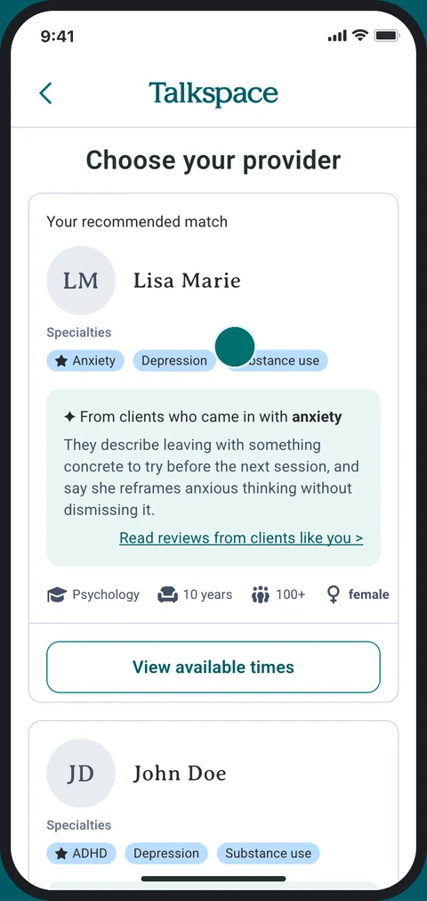
Talkspace Provider Reviews
Redesigning the provider card so members can evaluate and choose a provider with confidence, helping more of them make it to a first session with greater satisfaction in the match they chose.
Context
On Talkspace, members are matched with a therapist after a short intake
Talkspace is an online therapy platform that connects people with licensed therapists, who it calls providers. Members sign up, answer a short intake about what they want help with, and get matched with a provider for live video sessions and messaging.
Most members are matched automatically, based on their state, their main concern and provider availability. This project suggests a step where members choose their provider themselves. The provider card on that screen is what they choose from.
Before
With this project
01 · Problem
The current provider card has plenty of information, but not what members need to decide
When members reach "Choose Your Provider," the card already holds a lot of information: specialties, a bio, credentials, available times. But none of it was chosen around what members need to feel confident picking a provider, and many drop off before their first session.
April 2026
At best, 60% of auto-matched members complete a first session. Even with the strongest matching method, 40% never reach one.
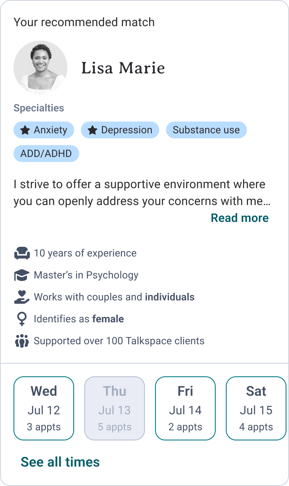
02 · Evidence
Members who choose their own provider show up more
This is where the problem narrows. Members who switched to a provider they picked themselves completed a first session at 73–76%, roughly 2–3× the auto-matched rate. So members seem less likely to drop off when they choose their provider themselves and feel confident in that match.
Lowest rateRange across matching methods
A note on this comparison
Today, members can only choose their own provider after their first auto-matched session, once they've decided to switch. That makes them a more proactive group, so it isn't a one-to-one comparison with members choosing during onboarding. But the gap was large enough to point to choice as the lever.
03 · Hypothesis
If members can see client reviews on the provider card, they'll know what to expect and feel confident enough to show up.
Members need a signal that builds confidence. Everything on the card today is generic profile information, listed the same way for every provider. None of it helps members picture what working with them would actually be like. Client reviews answer exactly that: what is it like to work with this person?
04 · Process
Wrote a PRD to set the rules before designing
I wrote it using data from our PM. It pinned down the problem and set three rules every design direction had to follow:
01
Use what's already there
Members already rate providers after sessions. Those reviews just aren't shown to members yet.
02
Words, not stars
Show what clients wrote, never a score. Ratings are noisy, and a visible 4.4 can unfairly hurt a good provider.
03
Easy to scan
Readable at a glance, right on the card, not a wall of text.
05 · Exploration
Three ways to put reviews on the card
With those three rules in place, I explored three ways to bring reviews onto the card. Each one changes only the review block.
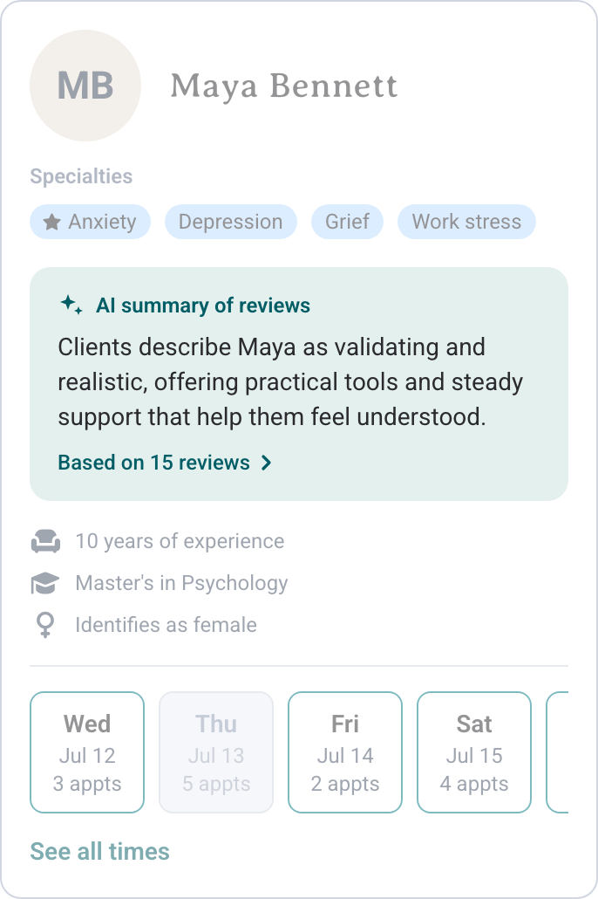
AI summary Best reaction in testing
One sentence summarizing what clients say.
Strength: Easiest to scan, and it works from many short reviews.
Risk: Members have to trust a summary written by AI.
Review preview
One full, standout review.
Strength: A real client's voice, so it feels authentic.
Risk: One review may not represent most clients' experience.
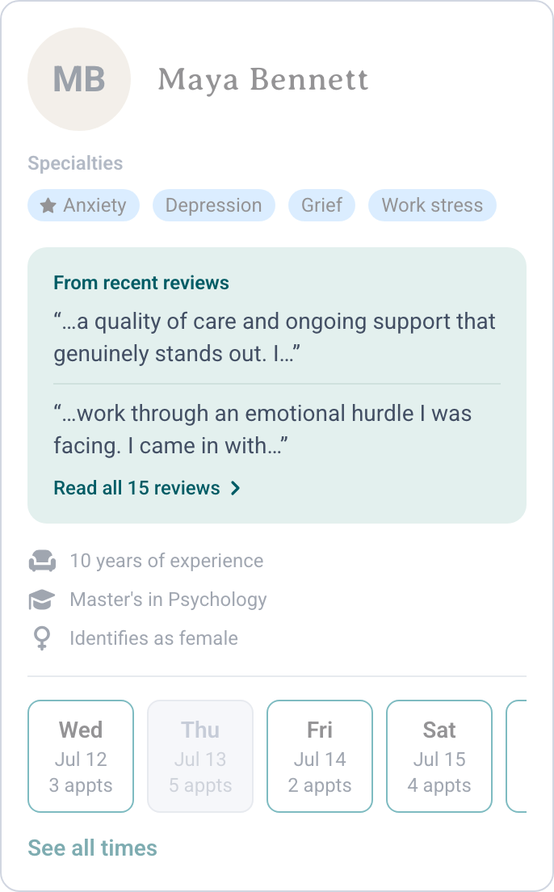
Review snippets
A few short fragments from different reviews.
Strength: Several voices at once.
Risk: Fragments lose context and can feel cherry-picked.
06 · Validation
Reviews helped participants choose their provider with confidence
I asked 18 usability test participants how much the reviews influenced their choice of provider. All 18 said the reviews strongly influenced it. Of the three directions, the AI summary got the best reaction.
"At the end it matters how the customer feels after leaving the therapy session."
"If they were able to help someone else with the same issues, hopefully they could help me."
"I chose Maya because she had better and more detailed reviews. This makes me feel more confident in her services."
07 · The constraint
Most providers didn't have enough reviews to fill the card
Then our PM flagged a problem: each direction needed several meaningful reviews to draw from, and most providers didn't have them. 65% of providers had just one review, and many reviews were blank or too short to say much, like "Aaron IS GREAT."
1,461 providers · 5-star review export
A card built around reviews would look empty for most providers and put newer ones at a disadvantage just for being new, so the design had to work the same whether a provider had 15 reviews or none.
08 · Decision
The MVP fit what the data could support: a link to a full reviews page
Talkspace decided to ship a "Client Testimonials" link that opens a full reviews page, instead of putting reviews on the card itself. The reasons:
It gives every provider the same experience, whether they have 15 reviews or none
It's the lightest version that could ship, with nothing left to cut
It still puts reviews in front of members
Before
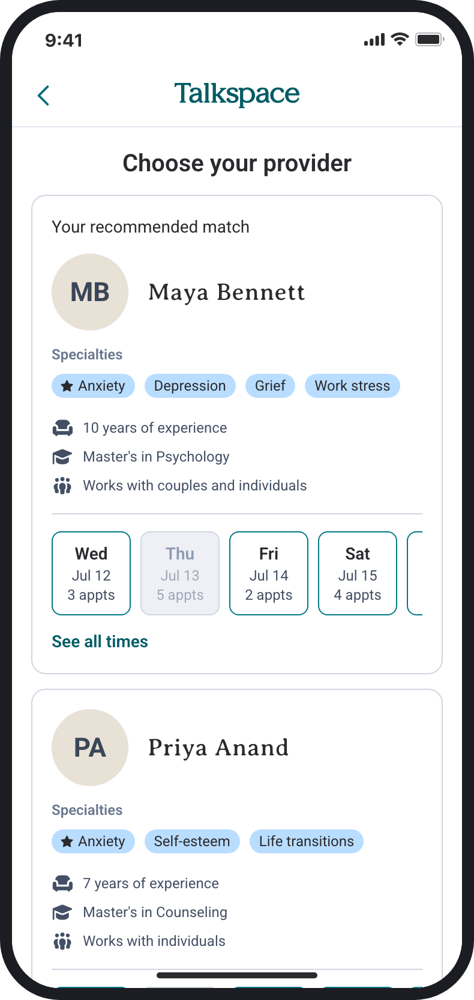
After
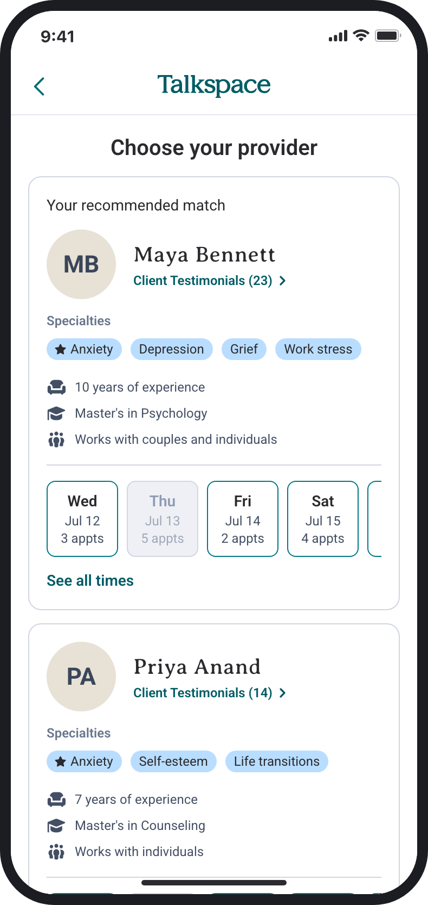
New page
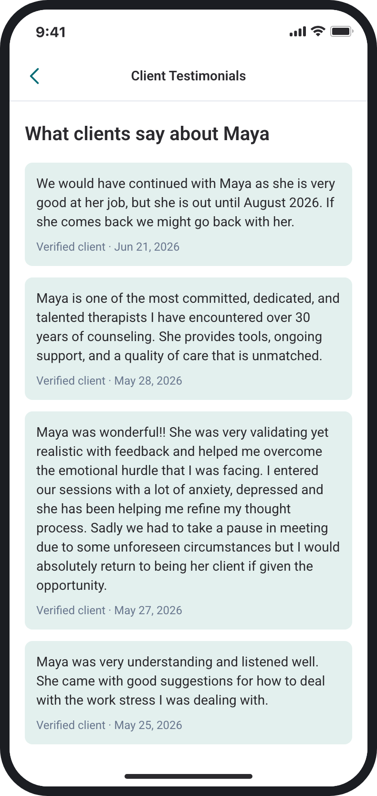
Beyond the handoff
After the handoff, I brought reviews back onto the card
The MVP was the right call for the review data Talkspace had at the time. After the handoff, I wanted to look further ahead, so I explored two questions:
How might we
Fair to every provider, useful to every member
I framed these before designing anything, and checked each decision against them.
HMW 01
How might we make every card look complete, with or without reviews?
A provider with no reviews should get a card as full as one with fifteen, with no empty space where reviews would go.
HMW 02
How might we give members a reason to choose every provider?
When a provider has no reviews yet, the card shows something else members can judge them by, like the provider's own words. That way new providers have the same chance of being chosen.
Solution 1
Each card summarizes reviews from clients who shared the same concern
This idea came from a participant in the usability test who hoped that a provider who had helped others with the same issues could help them too. The concern comes from the member's answer at intake, so every card in their list is summarized around it: "✦ From clients who came in with anxiety."
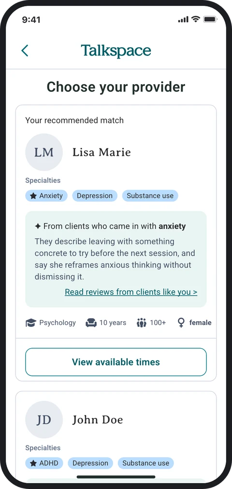
Every card in the list
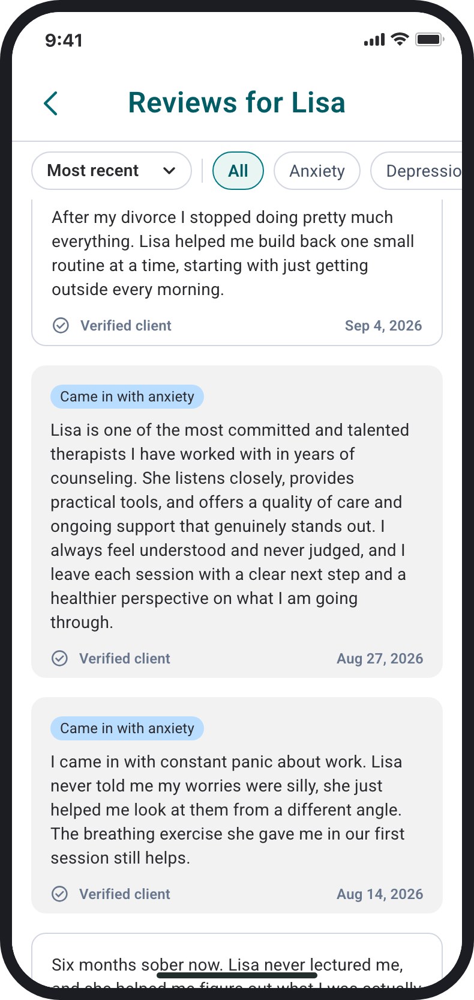
Its reviews page
It also catches matches the tags miss
One provider doesn't list anxiety as a specialty, but clients who came in with anxiety describe him helping them.
Specialties: no anxiety
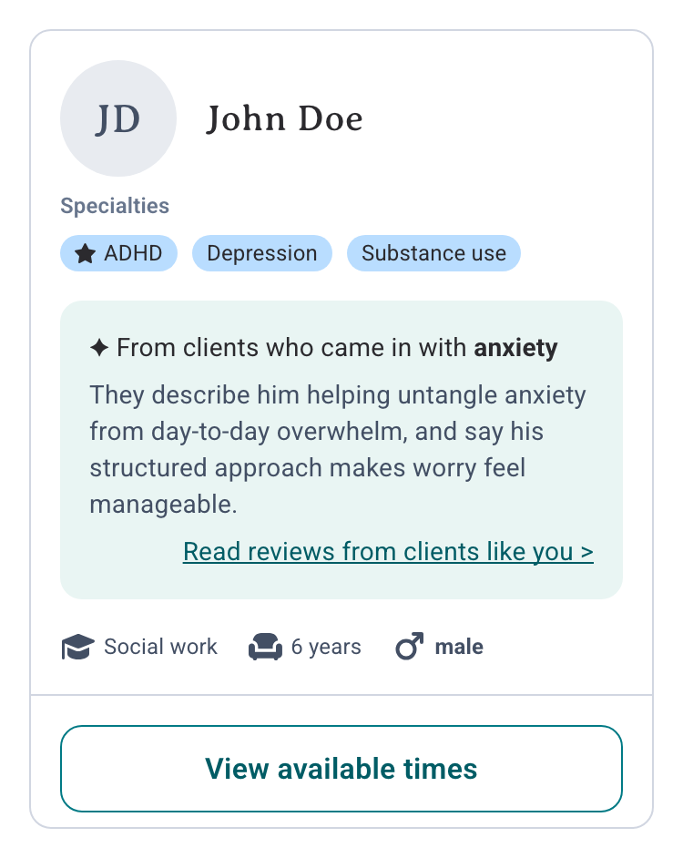
Clients with anxiety say he helped
Solution 2
Three versions of the card, depending on how many reviews a provider has
Only 116 providers (8%) have 3+ meaningful written reviews, and even fewer have 3 from clients with any one concern. So most members would see a card without a summary.
The green block sits in the same place, at the same size, on every card. What goes inside depends on how many relevant reviews the provider has. With fewer than 3, a summary would just reword one or two people, so the card shows the provider's own words instead.
Rich3+ reviews from clients with the member's concern
AI summary from clients with the same concern
Opens her reviews
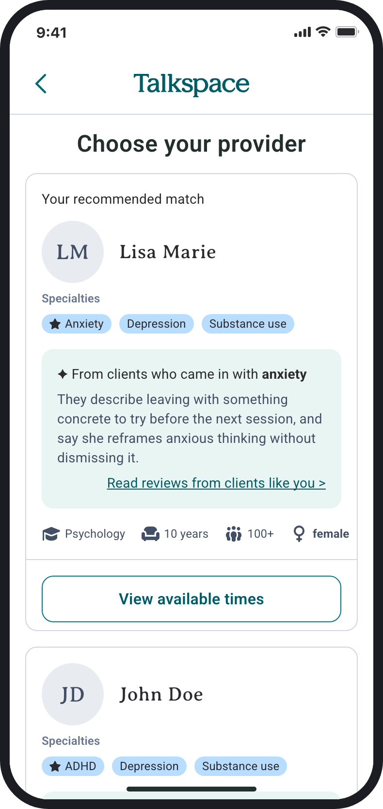
How many reviews it's from
Filter by topic
Clients with anxiety come first
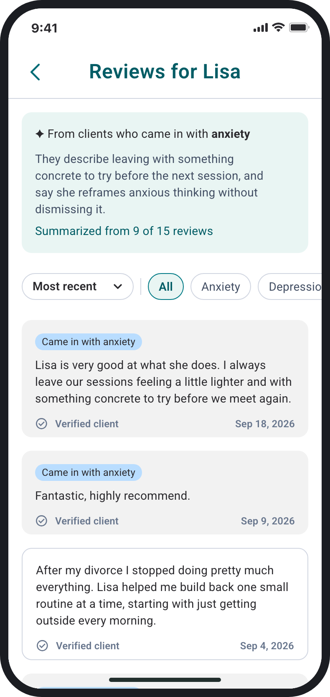
ThinSome reviews, too few to summarize honestly
Her own words, in the same green block
Opens what clients say
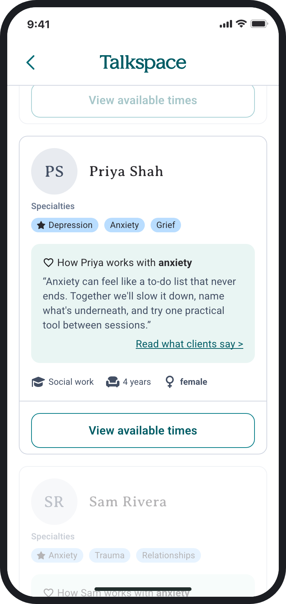
Her own words first
Her few reviews, shown as written
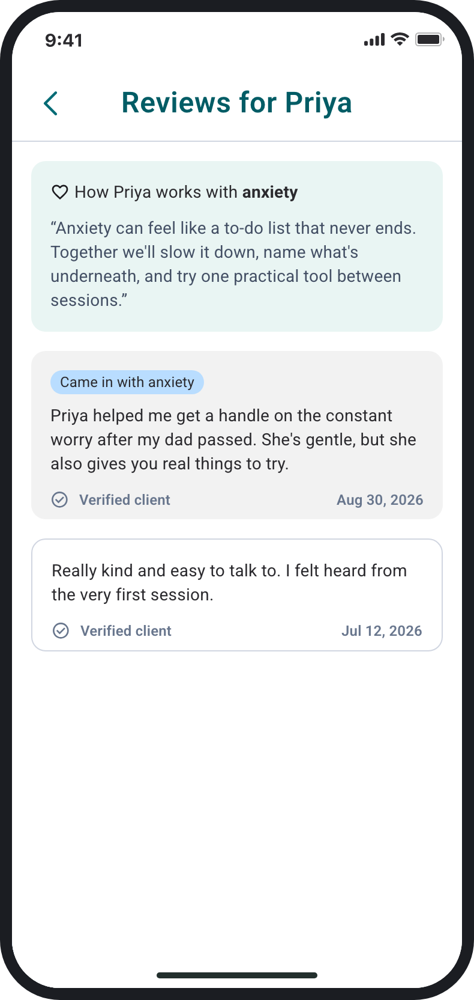
ColdNo reviews yet
His own words, in the same green block
Opens his Meet page
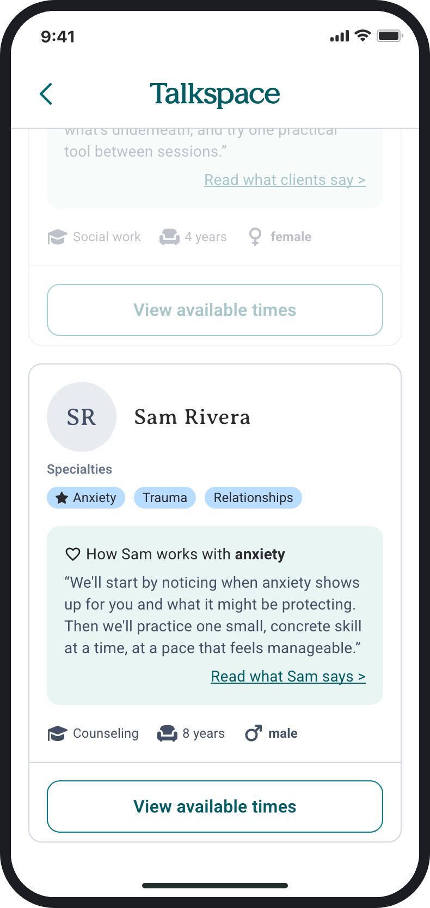
How he works with anxiety
What a first session looks like
Training, verified by Talkspace
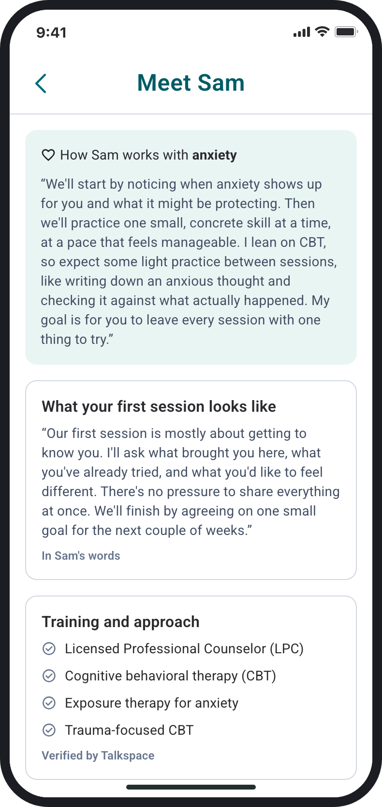
It never says "no reviews yet."
Each kind of provider gets its own strength. Established providers earn trust through what clients say: the review summary, plus a clients-helped count once they pass 100. New providers earn it in their own words.
Next
How I'd validate it
The 18-participant test validated review snippets on the card. Everything in this exploration is new, so the next step is testing it: